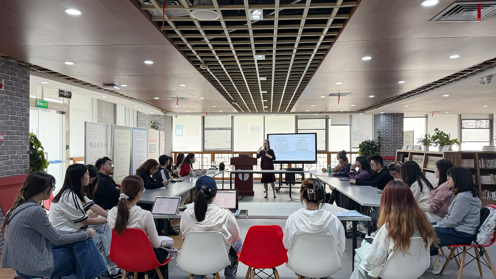

学院通知 · 竞赛比赛
四川大学第九届“经典守护者” 中华经典美文诵读大赛赛前培训讲座举行
发布时间：2026-04-30 15:44:18
4月15日，四川大学第九届“经典守护者”中华经典美文诵读大赛系列活动——“阅读与诵读”赛前培训讲座在江安图书馆明远文库举行。讲座特邀四川大学文学与新闻学院副教授、国家级普通话水平测试员朱姝主讲，由四川大学图书馆党委副书记兼纪委书记、副馆长杜小军主持。 为传承百卅学府文脉，弘扬中华优秀传统文化，持续打造川大特色诵读品牌，学校举办以“百卅川大 经典 赓 薪”为主题的四川大学第九届“经典守护者”中华经典美文诵读大赛。本次赛前培训讲座围绕经典诵读方法、作品理解表达、舞台呈现技巧等内容展开，旨在帮助参赛选手提升诵读水平和作品表现力。 讲座中，朱姝老师以人工智能发展为切入点，阐释了经典诵读在知识学习、思想交流和文化传承中的重要价值。她指出，人工智能能够高效完成信息传递，但诵读作为有温度的情感表达方式，能够生动呈现人的精神特质与个性魅力，这是机械化信息输出难以替代的。针对历届参赛选手在诵读中常见的问题，朱姝老师以《青春中国》为例，深入讲解了作品层次划分、情感把控和表达节奏等技巧。在经典篇目《木兰辞》的讲解环节，她通过逐句领读示范，指导选手准确把握段落之间的情绪转换和语气起伏，强调诵读应避免 套路化唱读 ，要在深入理解文本的基础上融入真情实感，实现内容理解与声音表达的统一。 在互动答疑环节，围绕作品遴选、朗诵配乐、舞台表达等问题，朱姝老师结合实例进行解答，并现场示范指导。她建议，参赛选手在选择作品时，应结合自身声线特点、理解能力和情感共鸣，选择适合个人表达的经典作品，同时也可尝试多元题材，丰富舞台呈现。在配乐运用方面，她指出，音乐应服务于文本表达，避免喧宾夺主；应根据作品主旨和情感基调选择适配度较高的配乐，使声音表达与背景氛围相互协调。讲座最后，朱姝老师还为参赛选手提出了初赛备战建议，帮助大家进一步明确准备方向。 本次讲座内容充实、针对性强，为参赛选手提供了专业、系统的诵读指导。四川大学第九届“经典守护者”中华经典美文诵读大赛由四川大学党委宣传部、校纪委、监察专员办、党委学生工作部（处）、校工会、校团委、党委教师工作部、研究生工作部、离退休工作处、海外教育学院、对外联络办公室（校友总会）、图书馆、四川大学语言文字工作委员会、成都市武侯区图书馆等单位联合主办，四川大学学生演讲与交际协会、四川大学图书馆志愿者队协办。本次讲座也是学校推进书香校园建设、引导师生亲近经典、诵读经典的重要举措。 供稿：研究发展中心 许笑月 谭林
